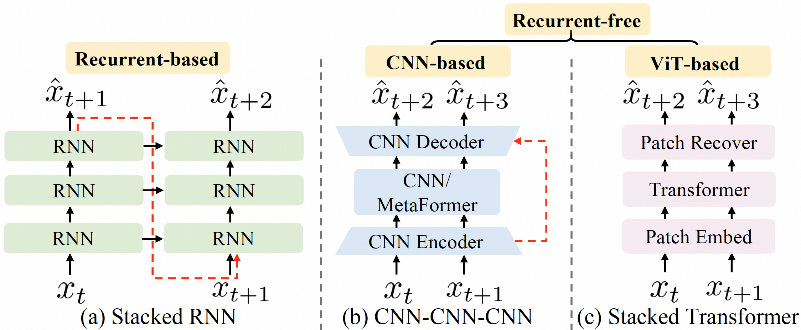

TMLR 2026
Video Prediction Transformers without Recurrence or Convolution

Video prediction has witnessed the emergence of RNN-based models led by ConvLSTM, and CNN-based models led by SimVP. Following the significant success of ViT, recent works have integrated ViT into both RNN and CNN frameworks, achieving improved performance. While we appreciate these prior approaches, we raise a fundamental question: Is there a simpler yet more effective solution that can eliminate the high computational cost of RNNs while addressing the limited receptive fields and poor generalization of CNNs? How far can it go with a simple pure transformer model for video prediction? In this paper, we propose PredFormer, a framework entirely based on Gated Transformers. We provide a comprehensive analysis of 3D Attention in the context of video prediction. Extensive experiments demonstrate that PredFormer delivers state-of-the-art performance across four standard benchmarks. The significant improvements in both accuracy and efficiency highlight the potential of PredFormer as a strong baseline for real-world video prediction applications. The source code and trained models will be released to the public.
Video Prediction, also named as Spatio-Temporal predictive learning involves learning spatial and temporal patterns by predicting future frames based on past observations. This capability is essential for various applications, including weather forecasting, traffic flow prediction, precipitation nowcasting and human motion forecasting. Despite the success of various video prediction methods, they often struggle to balance computational cost and performance. On the one hand, high-powered recurrent-based methods rely heavily on autoregressive RNN frameworks, which face significant limitations in parallelization and computational efficiency. On the other hand, efficient recurrent-free methods, such as those based on the SimVP framework, use CNNs in an encoder-decoder architecture but are constrained by local receptive fields, limiting their scalability and generalization. The ensuing question is Can we develop a framework that autonomously learns spatiotemporal dependencies without relying on inductive bias?
To systematically analyze the transformer structure of the network model in spatial-temporal predictive learning, we propose the PredFormer as a general model design. Follow the ViT design, PredFormer splits a sequence of frames into a sequence of equally sized, non-overlapping patches, each of which is flattened into a 1D tokens. These tokens are then linearly projected into hidden dimensions and processed by a layer normalization layer. Unlike typical ViT approach, which employs learnable position embeddings, we incorporate a spatiotemporal position encoding (PE) generated by sinusoidal functions with absolute coordinates for each patch. The 1D tokens are then processed by a PredFormer Encoder for feature extraction. PredFormer Encoder is stacked by Gated Transformer Blocks in various manners. Since our encoder is based on a pure gated transformer, without convolution or resolution reduction, global context is modeled at every layer. This allows it to be paired with a simple decoder, forming a powerful prediction model. After the encoder, a linear layer serves as the decoder, projecting the hidden dimensions back to recover the 1D tokens to 2D patches.
Modeling spatiotemporal dependencies in video prediction is challenging, as the balance between spatial and temporal information differs significantly across tasks and datasets. Developing flexible and adaptive models that can accommodate varying dependencies and scales is thus critical. To address these, we explore both full-attention encoders and factorized encoders with spatial-first (Fac-S-T) and temporal-first (Fac-T-S) configurations. In addition, we introduce six interleaved models based on PredFormer layer, enabling dynamic interaction across multiple scales. A PredFormer layer is a module capable of simultaneously processing spatial and temporal information. Building on this design principle, we propose three interleaved spatiotemporal paradigms, Binary, Triplet, and Quadrupled, which sequentially model the relation from spatial and temporal views. Ultimately, they yield six distinct architectural configurations.
We conduct an ablation study on the number of PredFormer layers, the Gate Linear Unit choice, and the design of Position Encoding.
We provide a visual comparison of PredFormer's prediction results and prediction errors with Ground Truth. For Moving MNIST, our model accurately captures digit trajectories, with significantly lower accumulated error compared to TAU. On TaxiBJ, PredFormer effectively reconstructs the intricate spatial structures of traffic patterns, reducing high-frequency noise present in TAU’s predictions. On WeatherBench, PredFormer achieves sharper and more precise temperature forecasts, with error heatmaps showing lower deviations in critical regions. Lastly, for Human3.6m, PredFormer consistently preserves fine-grained motion details, demonstrating superior temporal coherence in video prediction. Additional visualizations are provided in the supplementary material.
In this paper, we introduce PredFormer, a pure transformer-based framework designed for video prediction. Our in-depth analysis extends the understanding of spatial-temporal transformer factorization, moving beyond existing video ViT frameworks. Through rigorous experiments across diverse benchmarks, PredFormer shows unparalleled performance and efficiency, surpassing previous models by a large margin. Our results show that: (1) Interleaved spatiotemporal transformer architectures establish new benchmarks, excelling across multiple datasets. (2) Factorized temporal-first encoders significantly outperform both full spatial-temporal attention encoders and Factorized spatial-first configurations. (3) Implementing dropout and uniform stochastic depth concurrently leads to superior performance enhancements on overfitting datasets. (4) Absolute position encoding consistently outperforms learnable alternatives across all benchmarks. In summary, PredFormer not only establishes a strong baseline for real-world applications but also provides a new paradigm for video prediction with recurrent-free and convolution-free design.
If you find PredFormer useful for your research, please consider citing:
@inproceedings{tang2024predformer,
title={Video Prediction Transformers without Recurrence or Convolution},
author={Yujin Tang and Lu Qi and Xiangtai Li and Chao Ma and Ming-Hsuan Yang},
booktitle={TMLR},
year={2026}
}
We borrow this template from DreamBooth. PredFormer code is based on OpenSTL. We sincerely thank Cheng Tan for his help in improving this work.